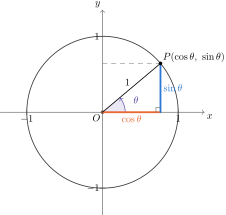

單位圓與三角函數定義
單位圓是以原點為圓心、半徑為 1 的圓。 它讓我們能把三角函數的定義從直角三角形推廣到任意角度。
用單位圓定義正弦與餘弦
從 \(x\) 軸正向出發，逆時針旋轉角度 \(\theta\)， 與單位圓交於點 \(P\)。我們定義
\[P = (\cos\theta,\ \sin\theta)\]
也就是說，\(\cos\theta\) 是 \(P\) 的 \(x\) 座標，\(\sin\theta\) 是 \(P\) 的 \(y\) 座標。

圖 1. 單位圓上的點 \(P\)：橫股（橘）標示 \(\cos\theta\)，縱股（藍）標示 \(\sin\theta\)
從 \(P\) 向 \(x\) 軸作垂線，就得到一個斜邊為 1 的直角三角形： 橫股的長度是 \(|\cos\theta|\)，縱股的長度是 \(|\sin\theta|\)。
因為 \(P\) 在單位圓上，座標必滿足 \(x^2 + y^2 = 1\)，立刻得到
\[\sin^2\theta + \cos^2\theta = 1\]